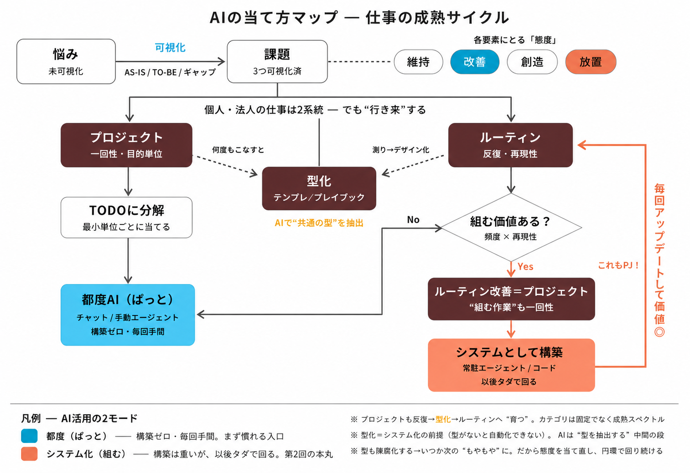
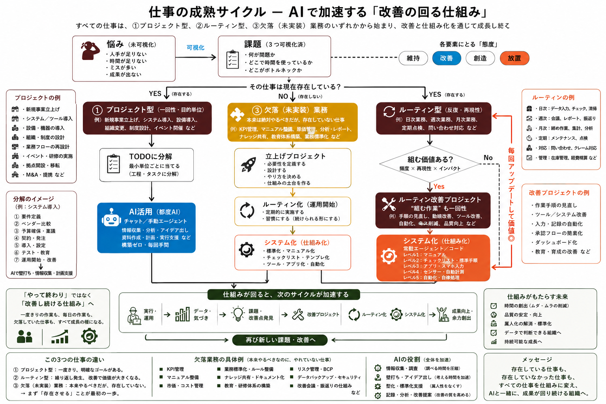
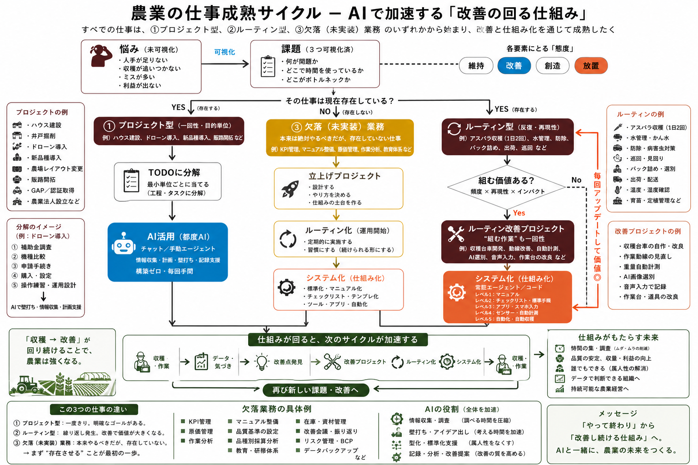
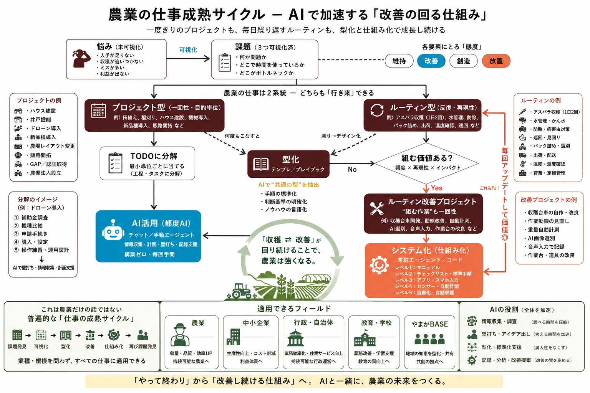

「やって終わり」から「改善し続ける仕組み」へ。
業種・規模を問わず、すべての仕事に当てはまる"地図"です。
これを 可視化（悩み→課題）→ 型化（テンプレ・標準化）→ システム化（仕組み化） と育てると、改善が"回る仕組み"になり、次のサイクルが加速する。
そして AIは、その全体を加速する ── 情報収集／壁打ち／型化・標準化／記録・分析の4点で。農業・中小企業・行政・教育まで、同じ地図で語れます。

いちばんシンプルな核。「都度AI（ぱっと使う）」と「システム化（組む）」の2モードが、型化を橋にどう移っていくか。クリックで拡大 ↗

プロジェクト・ルーティン・欠落業務の3類型を、システム化レベル1〜5・改善のフライホイール・AIの役割まで一枚に。あらゆる業種の決定版マップ。クリックで拡大 ↗

同じ地図を農業に当てはめた版。アスパラ収穫・水管理・選別などの具体例つきで、現場にそのまま落とせる。クリックで拡大 ↗

「これは農業だけの話ではない」── 中小企業・行政・教育・やまがBASE まで、同じサイクルが効くことを示した版。クリックで拡大 ↗